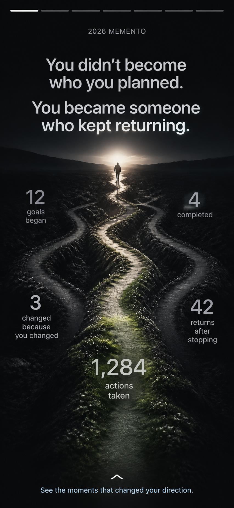
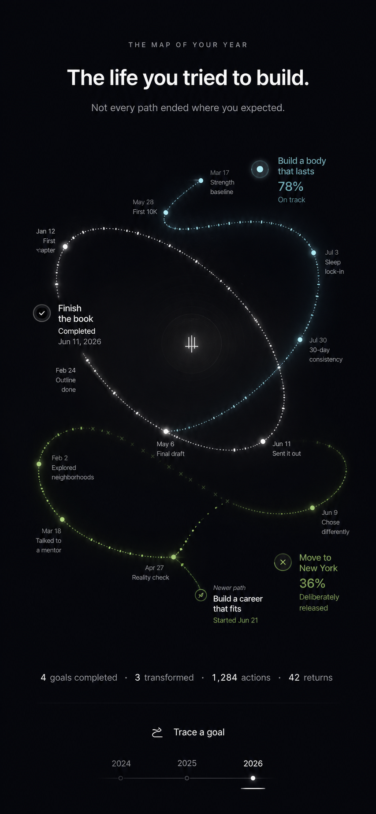
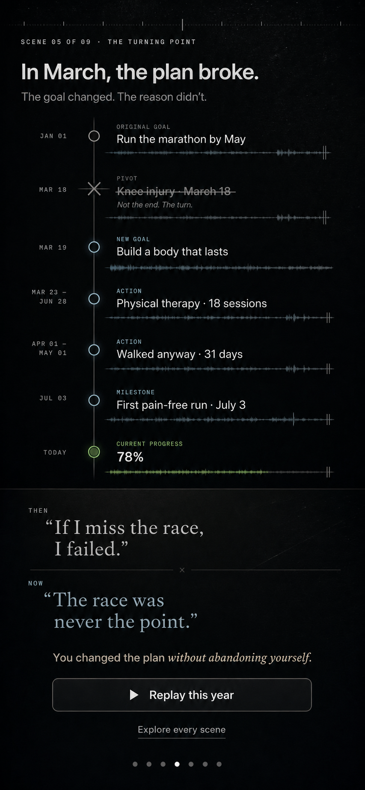

The year you kept going.
A cinematic, swipeable recap. Big truths first, then the goals, actions, changes, and returns that prove them.
↕Scroll the phone. Switch styles above.


A cinematic, swipeable recap. Big truths first, then the goals, actions, changes, and returns that prove them.


